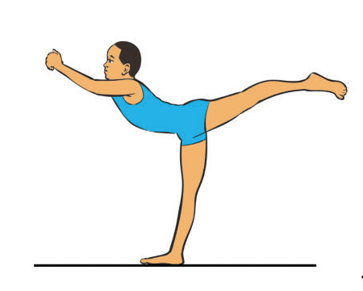
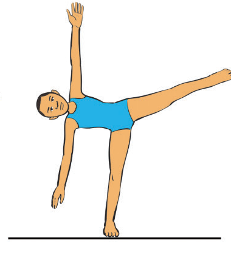
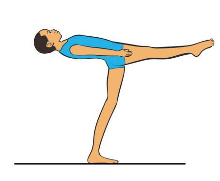
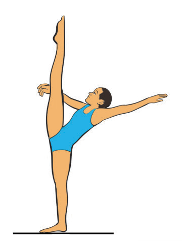
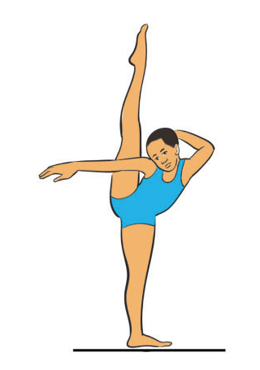
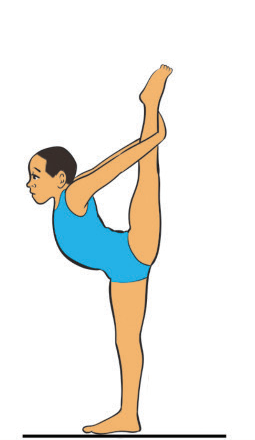

Figure 4.11: Standing scale
Activity 4.11
Search from internet and other sources on how to execute standing scale and practice it repeatedly until you master the skill.
V-sit
A V-sit is a strength and balance exercise where a gymnast supports the body on the hands while keeping the legs extended in a “V” shape. It develops core strength, flexibility, and body control and is often used in training, conditioning, and some competitive gymnastics routines. There are various V-sit including tucked V-sit, L-sit and V-sit press. The following steps will help you practice a V-sit:
- (i) Sit on the floor keeping your legs straight in front of you;
- (ii) Place hands on the floor positioning them slightly behind your hips for support;
- (iii) Engage your core tighten and abdominal muscles;
- (iv) Lift your legs raise them off the ground while keeping them straight;